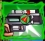
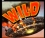
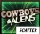
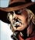
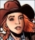

5-Reel 9-line Slots
The object of Cowboys & Aliens is to obtain winning symbol combinations by spinning the reels.
The game is played with 9 fixed lines only.
To play the game:
- Line bets are chosen by clicking + and – below Line Bet to increase or decrease the amount.
- The Cowboys & Aliens game is always played with 9 active paylines. The number of active paylines is fixed and cannot be changed by the player.
- Total bet per game round = line bet X active paylines.
- Clicking Spin spins the reels with the current selection of lines and line bets. During the reel spins the Spin button changes intoStop. Clicking Stop ends the spin animation and immediately displays the spin result.
- Reels can also be spun using the Auto Play function. Mouse over the Auto Play button to display the list of options. Select the number of spins to be played automatically or choose Until Feature to spin until the Alien Attack Bonus round or the Free Games round is triggered, or until the Aliens Weapon feature is activated. Clicking on an option starts the Auto Play function. The Auto Play button changes into Stop during the Auto Play mode. The Auto Play mode ends when the reels have been spun the number of times determined by the player, or when the Alien Attack Bonus or the Free Games round is triggered, or the Aliens Weapon feature is activated if you chose Until Feature, or when you click Stop.
- Wins are calculated according to the paytable. Line win = line bet X corresponding multiplier according to the paytable. Scatter win = total bet X corresponding multiplier according to the paytable. The paytable can be accessed via the Info page.
- On a given payline, only the highest payline winning combination pays while simultaneous winnings on different paylines are accumulated.
- In case of a winning spin, the Win field displays the accumulating winnings. The Win ticker can be stopped by clicking anywhere on the screen to display the total win amount immediately.
- Payline wins and the total win are also displayed on the strip located at the bottom of the reels or the game window.
Info page:
- Clicking Info opens the reference screen describing different game components. Clicking the arrow buttons at the lower right-hand corner of the screen enables navigating between the different info screens.
- The Paytable screen shows all winning combinations. When opened after a winning spin, the winning symbol combinations (number of symbols and bet multiplier) are highlighted and blink.
- The Alien Attack Bonus screens explain the symbol combinations necessary to enter the Alien Attack Bonus and describe the bonus round rules.
- The Free Games screen describes the symbol combinations necessary to trigger the Free Games feature and describes the Free Games feature rules.
- The Alien Weapon Feature screen explains the behavior of the  symbol during this feature.
- The Paylines screen illustrates the paylines and explains the rules for calculating their wins.
- Clicking Back exits the Info screen and returns to the game.
- Active paylines are represented by lines that appear over the reels as illustrated on the Paylines screen of the Info page.
- All 9 active paylines can register wins.
- There is a difference between the line bet and the total bet. The line bet shows how much is being bet on a single payline. The total bet shows how much is being bet in total on the game round. Payouts shown in the paytable are multiplied by the line bet.
The Scatter symbol is an exception to these rules. More information about the Scatter symbol can be found below.
About payouts:
- Payouts are listed on the Paytable screen. To find the possible win amount, the line bet must be multiplied by the payout.
- If two payline winning combinations occur on the same line, the higher of them is paid out. If more than one active payline has a winning combination, the winnings are accumulated.
- During the main game and Free Games one and the same amount on an active payline can be won by more than 1 winning combination. In such a case, the payline winning of the highest-ranking symbol combination will pay.
- Winning combinations do not have to start from the leftmost reel. However, the symbols participating in a winning combination on an active payline have to be adjacent.
The Scatter symbol is an exception to these rules. More information about the Scatter symbol can be found below.
Maximum Win Limit
The maximum win in the game has an upper limit. For more information, see the Terms and Conditions section.
Alien Weapon Feature
The symbol of appears on reel #1 during the main game only. Whenever it appears on this reel after a spin, its triangular indicator will randomly point to a number from 1 to 4. This represents the number of symbols from the same spin, which will be randomly turned into Wilds. All symbols located on reels #2 to #5 can become random Wilds except for  and .
Note: The resulting payouts from the Alien Weapon feature are calculated after the Wilds have been distributed over the reels and then added to your balance.
Wild symbol
The Wild symbol can stand for any other symbol, except for , , and , to make the best possible winning combination.
There is also a separate payout for 3 or more Wild symbols on an active payline, as seen in the Paytable. This is paid out instead of the regular symbol win if the win amount from Wilds is larger than the win from the regular symbols (by Wild standing in).
Scatter symbol
The Scatter symbols do not have to occur on any particular payline. If there are 2 or more Scatters in any position in the spin results, the payout is multiplied by the total bet and added to the payline winnings, if any.
If 3 or more Scatter symbols appear in any position on the reels simultaneously during the main game, 8 Free Games with comic strip Wilds are triggered. More information on the Free Games can be found here.
Bonus symbol
The Bonus symbol appears on reels #1 and #5 only. If the Bonus symbol appears anywhere on these reels simultaneously after a main game spin, the Alien Attack Bonus is triggered. More information about the Alien Attack Bonus can be found below.
Alien Attack Bonus
The Alien Attack Bonus is triggered by the appearance of 2 symbols on reels #1 and #5 simultaneously after a main game spin.
To start the Alien Attack Bonus, click on Click to Start.
A screen with 3 characters appears. Each of them has a corresponding weapon with a corresponding number of ammunition items and hit accuracy:
| Character | Weapon | Number of initial ammunitions | Hit accuracy |
|---|---|---|---|
|  | The Gun | 6 units | High |
 |
The Arrow | 12 units | Medium |
|  | The Whip | 20 units | Low |
Choose a character by clicking on it. Then another screen appears where the 1st, 2nd and 3rd wave of alien attack will take place. When the alien ships appear, shoot them down by trying to click on one of them. Each shot you take uses a unit of ammunition; however, it takes only 1 successful shot to take down an alien ship. Each alien ship that has been shot down wins you either a bonus cash prize, or additional +3 or +5 ammunition units, chosen randomly, or an extra x2 multiplier of the bonus cash prizes won up to that moment.
The Alien Attack Bonus round ends when all the aliens have been killed, or when you run out of ammunition.
If there is any ammunition left after the bonus round ends, you are awarded an additional bonus cash prize for each ammunition unit.
If you have shot down all alien ships during the 3 alien attack waves, you are awarded an additional bonus cash prize.
At the end of the Bonus game, a win screen displays your winnings. Game win shows the winnings that were received from the main game spin that won the Bonus. Feature win shows the winnings that were received during the Bonus. Total Win shows the accumulated winnings (Game Win and Feature Win added up). If no winnings were received during the spin that won the Bonus, then only the Total Win field will be shown.
Click Continue to return to the main game reels.
If 3 or more appear in any position on the reels simultaneously during the main game, 8 Free Games with comic strip Wilds are triggered.
After you click on Click to Start in the lower right-hand corner of the game window, a message appears saying that you win 8 Free Games with cash prize.
To start the Free Games, click on Continue.
During each Free Games spin a rectangular area, presenting a short comic book story, appears on the reels. With every reelspin that follows, this area changes its place. Nevertheless, all regular symbol positions it covers act as Wilds, thus allowing for a higher Free Games win.
During the Free Games, the reels are spun automatically using the same bet per line as on the spin that won the Free Games. After each spin, the win is displayed in the Win field. The Free Games Win field shows the accumulated winnings from the current Free Games.
After all Free Games have been completed, a result board summarizes the winnings. Game win shows the winnings that were received from the main game spin that won the Free Games. Feature win shows the winnings that were received during the Free Games. Total win shows the accumulated winnings (Game Win and Feature Win added up).
If the Free Games are triggered during the Auto Play mode, the feature begins after the player clicks on Click to Start. When all Free Games have been played and the player clicks Continue on the screen summarizing the Free Games win, the Auto Play mode resumes. When returning to the main game, clicking anywhere on the screen stops the win ticker and displays the full prize.
Clicking Continue will return you to the main game. When returning to the main game reels, clicking anywhere on the screen stops the win ticker and displays the full prize. Free Game wins are added to the payline wins.
Note: , and symbols are not available during Free Games.
Return to Player
The theoretical percentage return to player (RTP) is 94.01%.